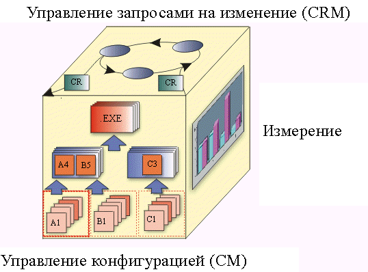

|
Основные аспекты системы управления конфигурацией обычно включают следующее:
-
Управление запросами изменений
-
Управление конфигурацией (CM)
-
Мониторинг изменений
-
Выбор версии
Система управления конфигурацией также может включать:
-
Производство программного обеспечения
-
Измерение и учет статуса конфигурации
Следующий Cube управления конфигурацией изображает основные аспекты системы управления конфигурацией, с учетом
взаимосвязей.

-
Система управления запросами изменений (CRM) предназначена для оценки стоимости, времени и последствий
изменений в продукте для инфраструктуры организации. Управление запросами изменений описывает работу коллектива по
проверке изменений или совета по контролю изменений.
-
Система учета (измерения) статуса конфигурации предназначена для описания состояния продукта на основании
типа, количества и серьезности неполадок, найденных и исправленных во время разработки продукта. Данные, получаемые
при аудите или напрямую, полезны при определении общего статуса завершенности проекта.
-
Управление конфигурацией (CM) описывает структуру продукта и идентифицирует составляющие элементы
конфигурации, которые рассматриваются как отдельные сущности, имеющие версии, в процессе управления конфигурацией.
Управление конфигурацией занимается определением конфигураций, компоновкой и метками, а также сбором рабочих
продуктов, имеющих версии, в наборы и поддержкой трассируемости между этими версиями.
-
Мониторинг изменений описывает действия по отношению к элементам, причины действий и время. Таким образом
можно иметь хронологию и объяснения изменений. Это отличается от оценки последствий предлагаемых изменений, как
описано в 'управлении запросами изменений'.
-
Цель Выбора версии в том, чтобы выбрать правильную версию или элемент конфигурации для реализации или
изменений. Выбора версии основывается на 'определении конфигурации'.
-
Производство программного обеспечения служит для автоматизации шагов по компиляции, тестированию и упаковке
программного обеспечения для распространения.
The Rational Unified Process представляет из себя комплексную систему управления конфигурацией, которая служит для всех
аспектов управления конфигурацией. Цель этой системы - эффективное управление конфигурацией, а именно:
-
нераздельность с процессом разработки приложений.
-
помощь в управлении развитием рабочих продуктов разработки приложений.
-
минимальное вторжение в процесс разработки при выполнении заданий управления конфигурацией.
Одна из целей управление конфигурацией Rational - это стимулировать контроль версий рабочих продуктов, разрабатываемых
различными инструментами, а также корректировать неэффективность производства печатной документации.
Другая цель процесса управления конфигурацией Rational - обеспечить уровень контроля, применяемый к каждом рабочему
продукту, на основании уровня зрелости продукта. Со зрелостью рабочего продукта авторизация изменений переходит от
реализующего продукт к подсистеме или системному интегратору, затем к руководителю проекта и, наконец, к клиенту.
Для эффективности процесса важно, чтобы дополнительная бюрократическая нагрузка, связанная с процессом управления
запросами изменений, была согласована со зрелостью продукта.
Например, во время ранних итераций процесс управления запросами изменений может быть относительно неформальным. На
более поздних этапах жизненного цикла проекта процесс управления запросами изменений может быть более строгим для того
чтобы тестирующие и документирующие ресурсы могли адекватно реагировать на изменения, а также на потенциальные
неполадки при изменениях. Проект, не способный установить необходимый уровень контроля при разработке, не будет
максимально эффективным.
|